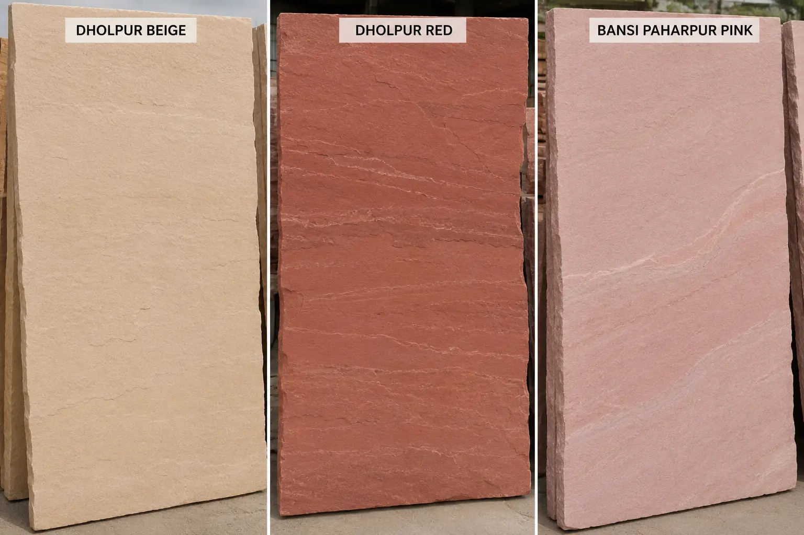
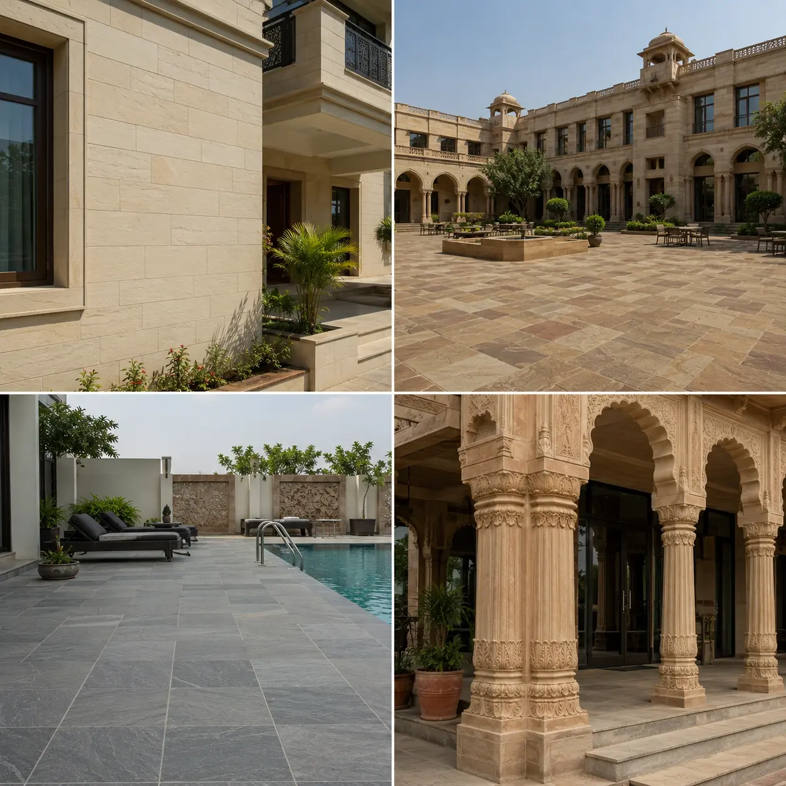

Premium Sandstone
Manufacturer in India
ANAY Premium Stone is a leading sandstone manufacturer in India supplying premium natural sandstone products for exporters, traders, wholesalers, distributors, architects, builders and project developers. From Rajasthan's renowned sandstone region, we manufacture and supply Dholpur Beige Sandstone, Dholpur Red Sandstone and Bansi Paharpur Pink Sandstone for residential, commercial, hospitality and landscape architecture projects worldwide.
Request a Quote
Leading Sandstone Manufacturer and Supplier in India
ANAY Premium Stone is a Rajasthan-based sandstone manufacturer specializing in the production and supply of high-quality Indian sandstone for domestic and international markets. With access to premium sandstone resources and professional processing facilities, we manufacture sandstone products that meet the requirements of exporters, traders, wholesalers, distributors, architects, builders and procurement companies.
As a trusted sandstone manufacturer in India, we focus on supplying consistent quality natural stone products suitable for architectural, commercial, hospitality, infrastructure and landscape projects. Our product range includes sandstone slabs, sandstone tiles, paving stones, wall cladding, pool coping, kerbstones, steps, risers and custom-cut architectural sandstone products.
Our manufacturing operations support both project-based and bulk supply requirements. Whether you are an exporter sourcing sandstone containers, a wholesaler looking for reliable supply, or a contractor requiring project-specific stone production, ANAY Premium Stone provides dependable manufacturing support and professional service.
We manufacture and supply premium
Dholpur Beige Sandstone,
Dholpur Red Sandstone
and
Bansi Paharpur Pink Sandstone
for clients across India, the UAE, the UK, the USA, Australia and other international markets.
- Premium Sandstone Manufacturer in India
- Bulk Sandstone Supplier for Exporters and Traders
- Sandstone Factory in Rajasthan
- Custom Sandstone Production for Projects
- Export Grade Packaging and Global Supply Capability
- Direct Quarry Sourcing and Quality Control
Sandstone Products We Manufacture

ANAY Premium Stone manufactures premium Indian sandstone products suitable for residential construction, commercial developments, hospitality projects, public infrastructure, landscaping and export markets. Our sandstone products are available in multiple finishes, dimensions and project-specific specifications to meet the requirements of architects, builders, exporters and wholesalers.
As a sandstone manufacturer in India, we focus on producing durable, aesthetically refined and architecturally versatile sandstone products suitable for both domestic and international projects.
Dholpur Beige Sandstone
Dholpur Beige Sandstone is one of the most widely specified natural stones for luxury villas, resorts, pool decks, courtyards, paving and landscape architecture. Its warm beige appearance, durability and low maintenance characteristics make it suitable for premium residential and commercial developments.
- Sandstone Slabs
- Sandstone Tiles
- Sandstone Paving
- Pool Coping
- Wall Cladding
- Steps & Risers
Dholpur Red Sandstone
Dholpur Red Sandstone is recognised for its rich natural red colour and timeless architectural appeal. It is frequently used in monuments, civic developments, luxury residences, public spaces, landscaping and commercial projects requiring a bold natural stone appearance.
- Sandstone Slabs
- Architectural Cladding
- Outdoor Paving
- Landscape Features
- Kerbstones
- Custom Stone Components
Bansi Paharpur Pink Sandstone
Bansi Paharpur Pink Sandstone is one of India's most prestigious architectural stones. The elegant pink colour and excellent durability make it suitable for luxury hospitality projects, government developments, premium residences and heritage architecture.
- Premium Sandstone Slabs
- Luxury Paving
- Wall Cladding
- Architectural Elements
- Landscape Applications
- Custom Project Production
Our sandstone manufacturing capabilities support custom dimensions, bespoke finishes and project-specific production requirements for architects, contractors, exporters and distributors worldwide.
Why Exporters, Traders and Wholesalers Source Sandstone from ANAY Premium Stone

Exporters, traders and wholesalers require more than just stone products. They need a reliable manufacturing partner capable of maintaining quality consistency, production schedules and dependable supply. ANAY Premium Stone supports businesses seeking long-term sandstone sourcing solutions from India.
Our manufacturing model is designed to support export houses, trading companies, distributors and procurement professionals who require consistent sandstone production for ongoing projects and international supply programs.
For Exporters
Exporters benefit from our ability to manufacture project-specific sandstone products, maintain quality consistency and prepare export-grade packaging suitable for container shipments worldwide.
For Traders
Stone traders rely on consistent availability, predictable lead times and competitive manufacturing support. Our production capabilities help traders secure dependable sandstone supply for domestic and international markets.
For Wholesalers
Wholesalers require scalable production capacity and long-term supply stability. We support wholesale distribution networks through bulk sandstone production and reliable inventory planning.
For Procurement Teams
Construction procurement teams benefit from professional communication, technical support, custom manufacturing and project-focused production planning.
Our objective is to build long-term business relationships with exporters, traders, wholesalers and project suppliers seeking premium sandstone products from India.
ANAY Premium Stone regularly works with sandstone exporters, trading companies, wholesalers, distributors, procurement teams and construction material suppliers seeking a dependable sandstone manufacturer in India. Our manufacturing capabilities support container quantities, project-based production and long-term supply partnerships.
Sandstone Manufacturing in Rajasthan

Rajasthan is internationally recognised as one of India's leading natural stone producing regions. The state is known for its extensive sandstone resources, architectural heritage and established stone manufacturing industry.
ANAY Premium Stone operates from Rajasthan and specialises in manufacturing premium sandstone products sourced from the region's renowned sandstone deposits. Our production process focuses on quality control, precision cutting, dimensional accuracy and project-specific manufacturing.
From quarry sourcing to finished product preparation, each stage of production is managed with an emphasis on consistency, durability and customer requirements.
Manufacturing Process
- Selection of Quality Sandstone Blocks
- Precision Cutting and Processing
- Dimensional Inspection
- Surface Finishing
- Quality Control Verification
- Export Grade Packaging
- Container Loading and Dispatch
This structured manufacturing approach enables us to support both large-scale commercial projects and ongoing supply requirements for exporters, wholesalers and distributors.
Bulk Sandstone Supply for Exporters, Traders and Distributors
ANAY Premium Stone supplies sandstone products in bulk quantities for exporters, trading companies, distributors, wholesalers, contractors and procurement agencies. Our manufacturing capabilities are designed to support long-term sourcing requirements and project-based supply programs.
Bulk Supply for Exporters
We support exporters seeking reliable sandstone manufacturing partners capable of supplying container quantities with consistent quality and export-ready packaging.
Bulk Supply for Traders
Stone traders benefit from dependable manufacturing support, flexible production planning and access to premium sandstone products suitable for multiple market segments.
Bulk Supply for Distributors
Distributors require reliable product availability and quality consistency. Our manufacturing system is structured to support repeat supply requirements and long-term distribution partnerships.
Bulk Supply for Builders and Contractors
Builders and contractors can source sandstone products directly from the manufacturer, reducing sourcing complexity while ensuring product consistency across large-scale developments.
Bulk Supply for Landscape Professionals
Landscape contractors and designers use our sandstone products for paving, pathways, courtyards, retaining walls, outdoor living environments and landscape architecture projects.
Whether the requirement is for a single project, regular procurement program or export distribution network, ANAY Premium Stone provides professional manufacturing and supply support.
Applications of Indian Sandstone

Indian sandstone is one of the most versatile natural building materials used across residential, commercial and public infrastructure projects worldwide.
- Luxury Villas and Residential Projects
- Hotels and Hospitality Developments
- Commercial Buildings
- Corporate Campuses
- Public Infrastructure Projects
- Landscape Architecture
- Pool Decks and Courtyards
- Outdoor Living Spaces
- Wall Cladding Systems
- Architectural Paving Applications
The durability, natural beauty and architectural flexibility of sandstone make it a preferred material for designers, builders and developers seeking long-term performance and timeless aesthetics.
Why Choose ANAY Premium Stone
ANAY Premium Stone is committed to supplying premium sandstone products that meet the expectations of exporters, traders, wholesalers, architects, builders and project developers. Our focus on quality, consistency and professional service has helped us build long-term relationships across domestic and international markets.
- Premium Sandstone Manufacturer in India
- Specialists in Dholpur Beige, Dholpur Red and Bansi Paharpur Pink Sandstone
- Direct Quarry Sourcing
- Professional Manufacturing Facilities
- Custom Sizes and Project-Specific Production
- Export Grade Packaging
- Bulk Supply Capability
- Reliable Lead Times
- Quality Control at Every Stage
- Support for Exporters, Traders and Wholesalers
- Global Supply Experience
- Professional Customer Support
Whether you are sourcing sandstone for export markets, wholesale distribution, commercial construction or architectural projects, ANAY Premium Stone provides dependable manufacturing support and premium natural stone solutions.
Who We Serve
ANAY Premium Stone supplies premium sandstone products to a wide range of businesses and professionals seeking reliable manufacturing, consistent quality and long-term supply partnerships from India.
-
Sandstone Exporters seeking dependable manufacturing support and export-ready production.
-
Stone Traders looking for consistent sandstone supply and project-specific production.
-
Wholesalers and Distributors requiring bulk sandstone quantities and long-term sourcing partnerships.
-
Builders and Construction Companies sourcing sandstone for residential, commercial and infrastructure developments.
-
Architects and Designers specifying premium sandstone for luxury villas, hospitality projects and public spaces.
-
Procurement Companies managing material sourcing for large-scale construction projects.
-
Landscape Contractors requiring sandstone paving, wall cladding, pool coping and outdoor architectural products.
-
International Importers seeking premium Indian sandstone directly from a manufacturer.
Whether the requirement is a single project, recurring procurement program or container-scale supply partnership, ANAY Premium Stone supports clients with professional manufacturing capabilities and premium sandstone products.
Frequently Asked Questions
Who is a sandstone manufacturer in India?
ANAY Premium Stone is a Rajasthan-based sandstone manufacturer supplying Dholpur Beige Sandstone, Dholpur Red Sandstone and Bansi Paharpur Pink Sandstone for exporters, traders, wholesalers and construction projects.
Where is sandstone manufactured in India?
Rajasthan is one of India's leading sandstone producing regions and is internationally recognised for premium sandstone manufacturing and processing.
Can exporters source sandstone directly from manufacturers?
Yes. Exporters can source sandstone directly from manufacturers such as ANAY Premium Stone for improved quality control, production consistency and reliable supply.
Do you supply sandstone in bulk quantities?
Yes. We support bulk sandstone supply requirements for exporters, wholesalers, distributors, builders and procurement companies.
What sandstone products do you manufacture?
We manufacture sandstone slabs, sandstone tiles, paving stones, wall cladding, pool coping, steps, risers, kerbstones and custom architectural stone products.
Do you provide export-grade packaging?
Yes. All products are packed using professional export-grade packaging methods suitable for international transportation.
Can traders purchase sandstone directly from your factory?
Yes. Traders and wholesalers can source sandstone products directly from ANAY Premium Stone.
Do you provide custom sizes and finishes?
Yes. We manufacture sandstone products according to project-specific dimensions, finishes and technical requirements.
Which sandstone varieties do you supply?
We specialise in Dholpur Beige Sandstone, Dholpur Red Sandstone and Bansi Paharpur Pink Sandstone.
How can I request a quotation?
You can contact ANAY Premium Stone with project details, dimensions, quantities or technical specifications to receive a quotation and product recommendations.
Explore Our Sandstone Products and Export Solutions
Learn more about our sandstone collections and international supply capabilities through the following resources:
Request a Quote from a Sandstone Manufacturer in India
Looking for a reliable sandstone manufacturer in India? ANAY Premium Stone supplies premium sandstone products for exporters, traders, wholesalers, distributors, builders and project developers worldwide.
Contact our team for pricing, product specifications, samples, project support and export information.
Do you supply sandstone to exporters across India?
Yes. ANAY Premium Stone supplies sandstone products to exporters, traders, wholesalers and project suppliers throughout India and supports domestic as well as international supply requirements.
Request a Quote
About ANAY Premium Stone
ANAY Premium Stone is a premium sandstone manufacturer and supplier based in Rajasthan, India. We specialise in manufacturing Dholpur Beige Sandstone, Dholpur Red Sandstone and Bansi Paharpur Pink Sandstone for domestic and international projects.
- Location: Rajasthan, India
- Industry: Natural Stone Manufacturing
- Products: Sandstone Slabs, Tiles, Paving, Wall Cladding, Pool Coping, Steps & Risers
- Markets: India, UAE, UK, USA, Australia and International Export Markets
- Custom Production Available
- Export Grade Packaging